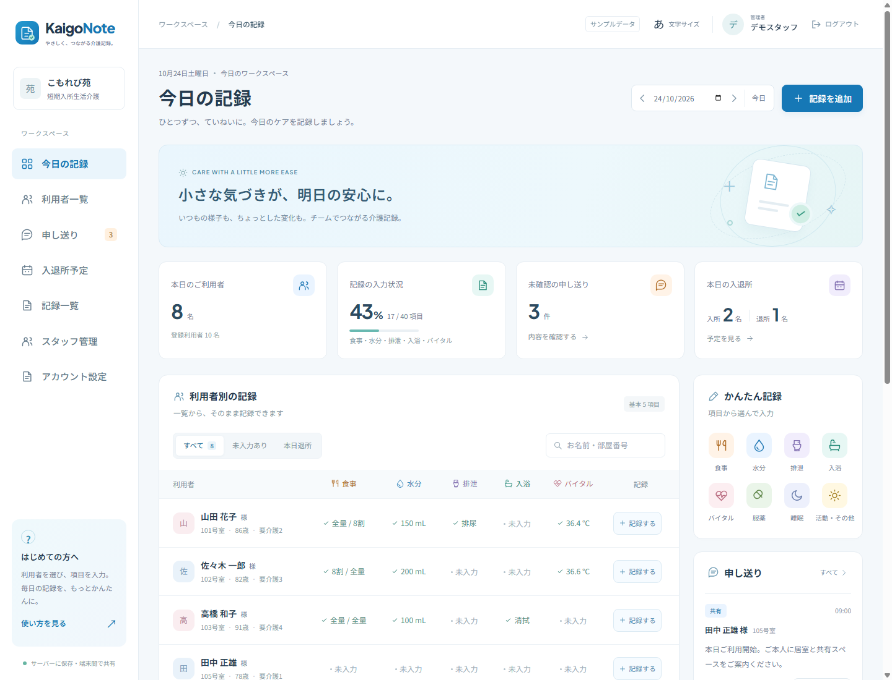

毎日のケアを記録
食事・水分・排泄・入浴・バイタル・服薬・睡眠・活動を、ひとつの画面から記録できます。
わかりやすい記録が、つながるケアに。
短期入所生活介護のための、日本語の介護記録ワークスペース。利用者を選び、ケアを記録し、チームで共有するシンプルな流れを大切にしています。
ローカル試作版。このページは画面の紹介であり、公開中の介護アプリではありません。

食事・水分・排泄・入浴・バイタル・服薬・睡眠・活動を、ひとつの画面から記録できます。
ローカル版では職員アカウント、管理者権限、記録の修正、職員ごとの申し送り確認に対応しています。
明るいブルー、大きな文字、わかりやすいボタン。幅広い年齢の職員に向けた、スマートフォンのカード表示も用意しています。
こもれび苑は、日本語・英語に対応した公開中の介護施設サイト。温かなデザインとシンプルな案内を大切にしています。